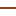

<!doctype html>
<html lang="en">
    <head>
        <meta charset="utf-8">
        <meta http-equiv="X-UA-Compatible" content="IE=edge">
        <meta name="viewport" content="initial-scale=1,user-scalable=no,maximum-scale=1,width=device-width">
        <meta name="mobile-web-app-capable" content="yes">
        <meta name="apple-mobile-web-app-capable" content="yes">
        <link rel="stylesheet" href="css/leaflet.css"><link rel="stylesheet" href="css/L.Control.Locate.min.css">
        <link rel="stylesheet" href="css/qgis2web.css"><link rel="stylesheet" href="css/fontawesome-all.min.css">
        <style>
        html, body, #map {
            width: 100%;
            height: 100%;
            padding: 0;
            margin: 0;
        }
        </style>
        <title></title>
    </head>
    <body>
        <div id="map">
        </div>
        <script src="js/qgis2web_expressions.js"></script>
        <script src="js/leaflet.js"></script><script src="js/L.Control.Locate.min.js"></script>
        <script src="js/leaflet.rotatedMarker.js"></script>
        <script src="js/leaflet.pattern.js"></script>
        <script src="js/leaflet-hash.js"></script>
        <script src="js/Autolinker.min.js"></script>
        <script src="js/rbush.min.js"></script>
        <script src="js/labelgun.min.js"></script>
        <script src="js/labels.js"></script>
        <script src="data/Relevom_3.js"></script>
        <script src="data/APAdoIbirapuit_4.js"></script>
        <script>
        var map = L.map('map', {
            zoomControl:true, maxZoom:28, minZoom:1
        }).fitBounds([[-30.895451771769075,-56.50960077603476],[-29.918912421237962,-54.75176028101104]]);
        var hash = new L.Hash(map);
        map.attributionControl.setPrefix('<a href="https://github.com/tomchadwin/qgis2web" target="_blank">qgis2web</a> &middot; <a href="https://leafletjs.com" title="A JS library for interactive maps">Leaflet</a> &middot; <a href="https://qgis.org">QGIS</a>');
        var autolinker = new Autolinker({truncate: {length: 30, location: 'smart'}});
        L.control.locate({locateOptions: {maxZoom: 19}}).addTo(map);
        var bounds_group = new L.featureGroup([]);
        function setBounds() {
        }
        map.createPane('pane_GoogleTerrain_0');
        map.getPane('pane_GoogleTerrain_0').style.zIndex = 400;
        var layer_GoogleTerrain_0 = L.tileLayer('https://mt1.google.com/vt/lyrs=p&x={x}&y={y}&z={z}', {
            pane: 'pane_GoogleTerrain_0',
            opacity: 1.0,
            attribution: '<a href="https://www.google.at/permissions/geoguidelines/attr-guide.html">Map data ©2015 Google</a>',
            minZoom: 1,
            maxZoom: 28,
            minNativeZoom: 0,
            maxNativeZoom: 20
        });
        layer_GoogleTerrain_0;
        map.addLayer(layer_GoogleTerrain_0);
        map.createPane('pane_GoogleSatellite_1');
        map.getPane('pane_GoogleSatellite_1').style.zIndex = 401;
        var layer_GoogleSatellite_1 = L.tileLayer('https://mt1.google.com/vt/lyrs=s&x={x}&y={y}&z={z}', {
            pane: 'pane_GoogleSatellite_1',
            opacity: 1.0,
            attribution: '<a href="https://www.google.at/permissions/geoguidelines/attr-guide.html">Map data ©2015 Google</a>',
            minZoom: 1,
            maxZoom: 28,
            minNativeZoom: 0,
            maxNativeZoom: 20
        });
        layer_GoogleSatellite_1;
        map.addLayer(layer_GoogleSatellite_1);
        map.createPane('pane_VegetaodaAPAIbirapuit_2');
        map.getPane('pane_VegetaodaAPAIbirapuit_2').style.zIndex = 402;
        var img_VegetaodaAPAIbirapuit_2 = 'data/VegetaodaAPAIbirapuit_2.png';
        var img_bounds_VegetaodaAPAIbirapuit_2 = [[-30.865432310777656,-55.92766799326335],[-29.95263237543207,-55.34309934482158]];
        var layer_VegetaodaAPAIbirapuit_2 = new L.imageOverlay(img_VegetaodaAPAIbirapuit_2,
                                              img_bounds_VegetaodaAPAIbirapuit_2,
                                              {pane: 'pane_VegetaodaAPAIbirapuit_2'});
        bounds_group.addLayer(layer_VegetaodaAPAIbirapuit_2);
        map.addLayer(layer_VegetaodaAPAIbirapuit_2);
        function pop_Relevom_3(feature, layer) {
            var popupContent = '<table>\
                    <tr>\
                        <td colspan="2">' + (feature.properties['OBJECTID'] !== null ? autolinker.link(feature.properties['OBJECTID'].toLocaleString()) : '') + '</td>\
                    </tr>\
                    <tr>\
                        <td colspan="2">' + (feature.properties['Id'] !== null ? autolinker.link(feature.properties['Id'].toLocaleString()) : '') + '</td>\
                    </tr>\
                    <tr>\
                        <th scope="row">Contour</th>\
                        <td>' + (feature.properties['Contour'] !== null ? autolinker.link(feature.properties['Contour'].toLocaleString()) : '') + '</td>\
                    </tr>\
                    <tr>\
                        <td colspan="2">' + (feature.properties['Shape_Leng'] !== null ? autolinker.link(feature.properties['Shape_Leng'].toLocaleString()) : '') + '</td>\
                    </tr>\
                </table>';
            layer.bindPopup(popupContent, {maxHeight: 400});
        }

        function style_Relevom_3_0(feature) {
            if (feature.properties['Contour'] >= 120.000000 && feature.properties['Contour'] <= 120.000000 ) {
                return {
                pane: 'pane_Relevom_3',
                opacity: 1,
                color: 'rgba(255,245,235,1.0)',
                dashArray: '',
                lineCap: 'square',
                lineJoin: 'bevel',
                weight: 2.0,
                fillOpacity: 0,
                interactive: false,
            }
            }
            if (feature.properties['Contour'] >= 120.000000 && feature.properties['Contour'] <= 180.000000 ) {
                return {
                pane: 'pane_Relevom_3',
                opacity: 1,
                color: 'rgba(254,210,166,1.0)',
                dashArray: '',
                lineCap: 'square',
                lineJoin: 'bevel',
                weight: 2.0,
                fillOpacity: 0,
                interactive: false,
            }
            }
            if (feature.properties['Contour'] >= 180.000000 && feature.properties['Contour'] <= 240.000000 ) {
                return {
                pane: 'pane_Relevom_3',
                opacity: 1,
                color: 'rgba(253,146,67,1.0)',
                dashArray: '',
                lineCap: 'square',
                lineJoin: 'bevel',
                weight: 2.0,
                fillOpacity: 0,
                interactive: false,
            }
            }
            if (feature.properties['Contour'] >= 240.000000 && feature.properties['Contour'] <= 300.000000 ) {
                return {
                pane: 'pane_Relevom_3',
                opacity: 1,
                color: 'rgba(223,79,5,1.0)',
                dashArray: '',
                lineCap: 'square',
                lineJoin: 'bevel',
                weight: 2.0,
                fillOpacity: 0,
                interactive: false,
            }
            }
            if (feature.properties['Contour'] >= 300.000000 && feature.properties['Contour'] <= 360.000000 ) {
                return {
                pane: 'pane_Relevom_3',
                opacity: 1,
                color: 'rgba(127,39,4,1.0)',
                dashArray: '',
                lineCap: 'square',
                lineJoin: 'bevel',
                weight: 2.0,
                fillOpacity: 0,
                interactive: false,
            }
            }
        }
        map.createPane('pane_Relevom_3');
        map.getPane('pane_Relevom_3').style.zIndex = 403;
        map.getPane('pane_Relevom_3').style['mix-blend-mode'] = 'normal';
        var layer_Relevom_3 = new L.geoJson(json_Relevom_3, {
            attribution: '',
            interactive: false,
            dataVar: 'json_Relevom_3',
            layerName: 'layer_Relevom_3',
            pane: 'pane_Relevom_3',
            onEachFeature: pop_Relevom_3,
            style: style_Relevom_3_0,
        });
        bounds_group.addLayer(layer_Relevom_3);
        map.addLayer(layer_Relevom_3);
        function pop_APAdoIbirapuit_4(feature, layer) {
            var popupContent = '<table>\
                    <tr>\
                        <th scope="row">Nome</th>\
                        <td>' + (feature.properties['Nome'] !== null ? autolinker.link(feature.properties['Nome'].toLocaleString()) : '') + '</td>\
                    </tr>\
                    <tr>\
                        <th scope="row">Municipio</th>\
                        <td>' + (feature.properties['Municipio'] !== null ? autolinker.link(feature.properties['Municipio'].toLocaleString()) : '') + '</td>\
                    </tr>\
                    <tr>\
                        <th scope="row">Bioma</th>\
                        <td>' + (feature.properties['Bioma'] !== null ? autolinker.link(feature.properties['Bioma'].toLocaleString()) : '') + '</td>\
                    </tr>\
                    <tr>\
                        <th scope="row">Área (ha)</th>\
                        <td>' + (feature.properties['Área (ha)'] !== null ? autolinker.link(feature.properties['Área (ha)'].toLocaleString()) : '') + '</td>\
                    </tr>\
                </table>';
            layer.bindPopup(popupContent, {maxHeight: 400});
        }

        function style_APAdoIbirapuit_4_0() {
            return {
                pane: 'pane_APAdoIbirapuit_4',
                opacity: 1,
                color: 'rgba(35,35,35,1.0)',
                dashArray: '',
                lineCap: 'butt',
                lineJoin: 'miter',
                weight: 2.0, 
                fill: true,
                fillOpacity: 1,
                fillColor: 'rgba(232,113,141,0.0)',
                interactive: true,
            }
        }
        map.createPane('pane_APAdoIbirapuit_4');
        map.getPane('pane_APAdoIbirapuit_4').style.zIndex = 404;
        map.getPane('pane_APAdoIbirapuit_4').style['mix-blend-mode'] = 'normal';
        var layer_APAdoIbirapuit_4 = new L.geoJson(json_APAdoIbirapuit_4, {
            attribution: '',
            interactive: true,
            dataVar: 'json_APAdoIbirapuit_4',
            layerName: 'layer_APAdoIbirapuit_4',
            pane: 'pane_APAdoIbirapuit_4',
            onEachFeature: pop_APAdoIbirapuit_4,
            style: style_APAdoIbirapuit_4_0,
        });
        bounds_group.addLayer(layer_APAdoIbirapuit_4);
        map.addLayer(layer_APAdoIbirapuit_4);
        var baseMaps = {};
        L.control.layers(baseMaps,{' APA do Ibirapuitã': layer_APAdoIbirapuit_4,'Relevo (m)<br /><table><tr><td style="text-align: center;"></td><td>120 - 120</td></tr><tr><td style="text-align: center;"></td><td>120 - 180</td></tr><tr><td style="text-align: center;"></td><td>180 - 240</td></tr><tr><td style="text-align: center;"></td><td>240 - 300</td></tr><tr><td style="text-align: center;"></td><td>300 - 360</td></tr></table>': layer_Relevom_3,"Vegetação da APA Ibirapuitã": layer_VegetaodaAPAIbirapuit_2,"Google Satellite": layer_GoogleSatellite_1,"Google Terrain": layer_GoogleTerrain_0,},{collapsed:false}).addTo(map);
        setBounds();
        var i = 0;
        layer_Relevom_3.eachLayer(function(layer) {
            var context = {
                feature: layer.feature,
                variables: {}
            };
            layer.bindTooltip((layer.feature.properties['Contour'] !== null?String('<div style="color: #000000; font-size: 12pt; font-family: \'MS Shell Dlg 2\', sans-serif;">' + layer.feature.properties['Contour']) + '</div>':''), {permanent: true, offset: [-0, -16], className: 'css_Relevom_3'});
            labels.push(layer);
            totalMarkers += 1;
              layer.added = true;
              addLabel(layer, i);
              i++;
        });
        L.ImageOverlay.include({
            getBounds: function () {
                return this._bounds;
            }
        });
        resetLabels([layer_Relevom_3]);
        map.on("zoomend", function(){
            resetLabels([layer_Relevom_3]);
        });
        map.on("layeradd", function(){
            resetLabels([layer_Relevom_3]);
        });
        map.on("layerremove", function(){
            resetLabels([layer_Relevom_3]);
        });
        var legend = L.control({position: 'bottomright'});
		legend.onAdd = function (map) {
			var div = L.DomUtil.create('div', 'info legend');
			div.innerHTML +=
            '';
    	return div;
		};
		legend.addTo(map);
        </script>
    </body>
</html>
